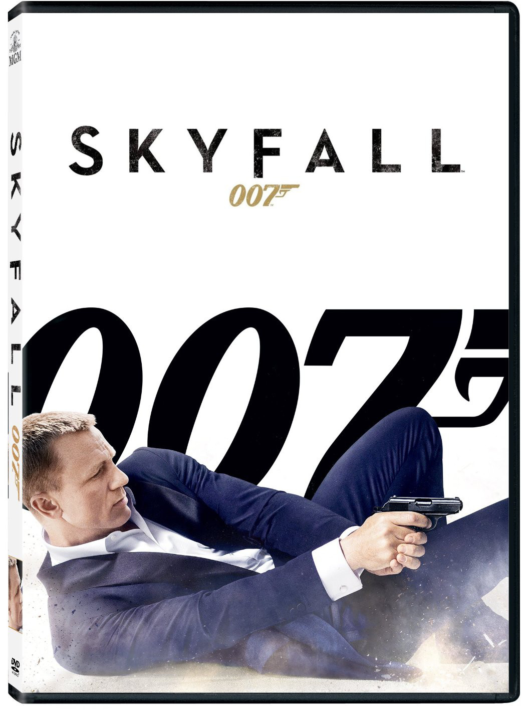

Big Blockbuster
The James Bond movie is an institution and that was proved further with the resounding international box office success of the latest installment, Skyfall. It became the first Bond film to bank over a billion dollars and just recently it was announced that Skyfall topped The Dark Knight Rises on the all-time box office list. The thrills have now come home as the Daniel Craig-starring flick has landed on DVD and Blu-Ray. 
Skyfall features Daniel Craig back for his third time around as the British agent with a license to kill. The film also upped the quality ante by hiring Oscar-winning director Sam Mendes. The helmer is a lifelong Bond fan and that adoration is present throughout, as we stated in our theatrical Skyfall review. It is the best Bond film in decades and certainly ranks near the top of the series.
This time out, our hero has a mission that is rooted in the backstory of MI6 leader M (Judi Dench). Seems there's a rogue former agent (Javier Bardem as one of the most devilishly good Bond villains in years) who is seeking to expose all of Britain's agents in the field, a certain death sentence. The film commences with one of the best action sequences of 2012 and certainly one of the best openings in the Bond canon. Craig is chasing a man with a disc that contains the identity of much of the British secret service.
For any Bond fan, the Skyfall home video is a must own. Movie Fanatic received the Blu-Ray/DVD combo pack and it is littered with outstanding extras. You'll forgive us for drooling over the package as it is manna for a Bond-crazed fanatic. The documentary features that look into the filming of the blockbuster break it down into 13 astounding parts. From the Intro, Opening Sequence through exploring the Bond girls, villains, locations and M herself, the viewer will finish the Skyfall home video experience with a graduate degree in all things 007.
Also, given Mendes' passion for the 50 years of James Bond, his commentary track provides insight delivered with pure unadulterated excitement that mirrors every fan watching it at home. Then, there is the commentary track by producers, and of particular interest is the one laid down by Barbara Broccoli -- it is her family that has made Bond films for five decades. For those who love trailers, the inclusion of the Skyfall trailer is the icing on this cake. By the closing credits of the film itself, Skyfall has set into motion a new era of Bond with players such as Ralph Fiennes and Naomie Harris in place with Craig to take the franchise further into the future. Until we get the next in the series, the Skyfall Blu-Ray and DVD is one fantastic way to revisit the world of Bond repeatedly until Craig dons his tux once again.